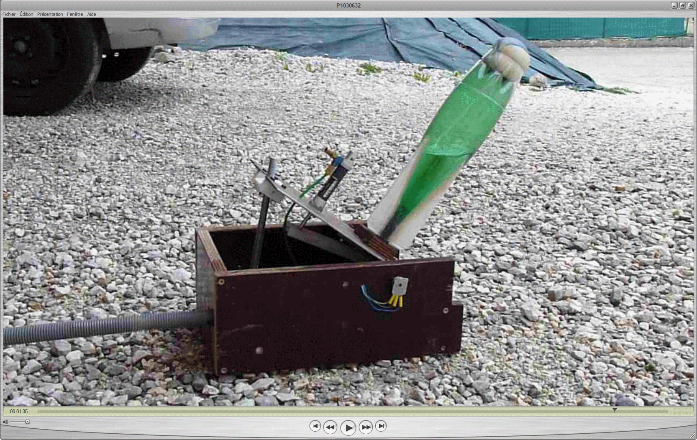
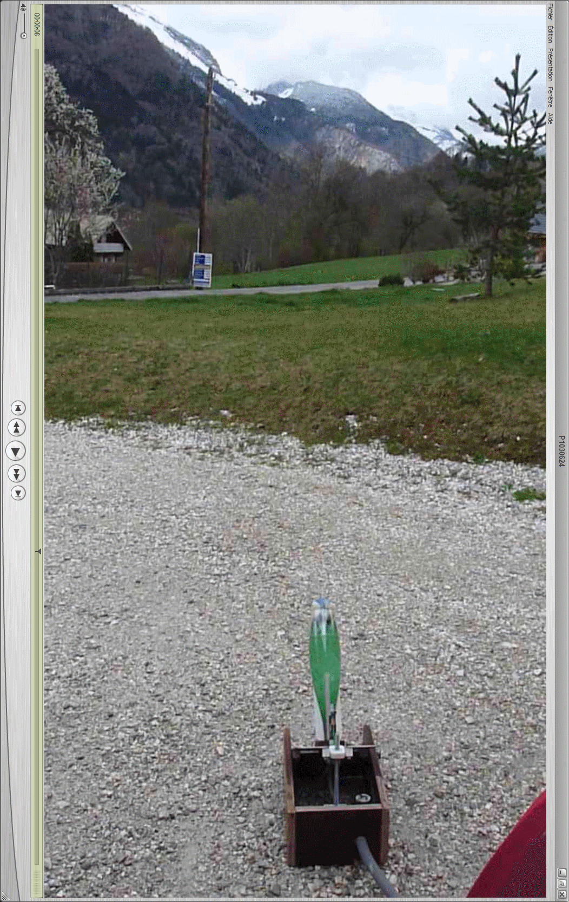

Tirs
Étapes
Nous avons effectué plusieurs tirs afin de tester le bon fonctionnement de la maquette. Voici quelques photos montrant les diverses étapes d'un lancement au relâchement du vérin de maintien : (délai d'environ 30 ms entre chaque image)

